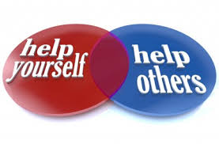

Help Yourself To Live Better.......

Getting out of an abusive or violent relationship isn't easy. Maybe you're still hoping that things will change or you are
afraid of what your partner will do if he discovers you are trying to leave. Whatever your reasons, you probably feel trapped and
helpless. But help is available. There are many resources available for abused and battered women, including crisis hotlines,
shelters even job training, legal services, and childcare. You deserve to live free of fear. Start by reaching out.
If you are being abused, remember:
*You are not to blame for being battered or mistreated
* You are not the cause of your partner's abusive behavior
* You deserve to be treated with respect.
* You deserve a safe and happy life.
* Your children deserve a safe and happy life.
*You are not alone. There are people waiting to help.
Help for Abused and Battered Women
As you face the decision to either end the abusive relationship or try to save it, keep the following things in mind:
If you're hoping your abusive partner will change... The abuse will probably happen again. Abusers have deep emotional
and psychological problems. While change is not impossible, it isn't quick or easy. And change can only happen once your abuser
takes full responsibility for his behavior, seeks professional treatment, and stops blaming you, his unhappy childhood, stress,
work, his drinking, or his temper.
If you believe you can help your abuser... It's only natural that you want to help your partner. You may think you are
the only one who understands him or that it’s your responsibility to fix his problems. But the truth is that by staying and
accepting repeated abuse, you're reinforcing and enabling the abusive behavior. Instead of helping your abuser, you're
perpetuating the problem.
If your partner has promised to stop the abuse... When facing consequences, abusers often plead for another chance,
beg for forgiveness, and promise to change. They may even mean what they say in the moment, but their true goal is to stay
in control and keep you from leaving. But most of the time, they quickly return to their abusive behavior once they've been
forgiven and theyre no longer worried that you'll leave.
If your partner is in counseling or a program for batterers... Even if your partner is in counseling, there is no
guarantee that he'll change. Many abusers who go through counseling continue to be violent, abusive, and controlling.
If your partner has stopped minimizing the problem or making excuses, that’s a good sign. But you still need to make
your decision based on who he is now, not the man you hope he will become.
If you're worried about what will happen if you leave... You may be afraid of what your abusive partner will do,
where you’ll go, or how you’ll support yourself or your children. But don’t let fear of the unknown keep you in a dangerous,
unhealthy situation.
Violence involving children in community settings can be
prevented through:
*pre-school enrichment programmes to give young children an educational head start;
*life skills training;
*assisting high-risk adolescents to complete schooling;
*reducing alcohol availability through the enactment and enforcement of liquor licensing laws, taxation and pricing;
*restricting access to firearms.